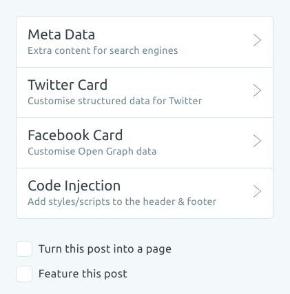

Having tried Static Site Generators(SSGs) such as Gatsby, React-Static, Hugo, I have to say that I am frustrated(read: lazy) at having to either buy into their templating system(Hugo), content retrieval workflow(Gatsby) or just simply starting from the ground up while building my own personal website.
The positive
The editor and admin interface
Ghost 2.0 comes with a elegant and intuitive editor that makes the writing experience really pleasant.
For writing, one should be focussed on the task at hand and not be distracted by the myriad plugins, settings and options.
HTML and markdown editors are also available for users who like to work with them.
The rest of the admin panel is also equally easy to work with.
Adding a logo, site cover image, pages such as contact page and about page can't get any simpler.
Well-documented theme
Casper is the default theme shipped with ghost. It is not only aesthetically pleasing, the documentation of the theme is excellent.
I am particularly impressed when I come across a product that is documented really well, well enough to onboard a new user to get started painlessly. This shows that the maintainers are not only competent, but they also care about creating products that people can actually understand and use alongside the website.
SEO
Another important aspect of running a personal blog is SEO. Ghost allows us to add custom post SEO meta data for search engines and facebook and twitter.

The drawbacks
As awesome as the writing experience Ghost brings, it isn't without drawbacks.
While the ghost experience from the perspective of a general user is extremely pleasant, certain options such as adjusting image size and serving scaled images are not quite apparent at first.
For the former, ghost automatically optimise images via lossless compression. If that isn't enough, specifiying width and height attribute in an img tag is a quick way to resize image, though suboptimal.
For the latter, we can work with 3rd party image management providers such as Cloudinary, or optionally have a read at image optimisation for the performance champs.
As a software developer, I am able to navigate and work with the css and js files and modifying the asset bundling process without a lot of difficulty.
It would be great if such common operations such as these are being communicated to users more clearly.
The lowdown
As a matter of fact, the best blogging platform largely depends on our needs. Therefore, we have to understand what kind of blogging experience we require in order to find a suitable platform to meet our needs.
For me, I am looking for a pleasant, distraction-free writing experience on the go without too much of a setup such as setting up page layouts, writing SEO meta data, which are usually shipped with SSGs.
Therefore, the ghost platform fits my requirement nicely, and I am happy with it thus far.
Of course, SSGs produce static website, while a ghost blog isn't a static website.
With a little bit of tinkering and hacking, I managed to convert my dynamic ghost blog with a node.js backend, into a static website and host it on Netlify.
However, this is a subject for another time.